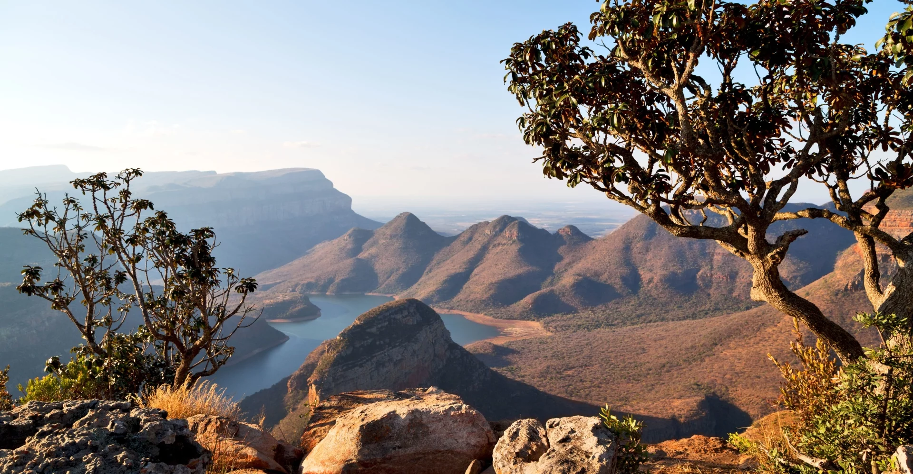

Capital : Le cap
Population (2018) : 61 millions
President of the Republic: Cyril Ramaphosa
Vice-President of the Republic: Paul Mashatile
Parliament: Parliament
Official languages: afrikaans, anglais, ndébélé du Transvaal, sotho du Nord, sotho du Sud, swati, tsonga, tswana, venda, xhosa, zoulou, langue des signes sud-africaine.
Cash : Rand
The Republic of South Africa is bordered to the north by Namibia, Botswana and Zimbabwe, and to the northeast by Mozambique and Eswatini. Lesotho is landlocked within South African territory. To this territory is added the archipelago of the Prince Edward Islands and, until 1994, Walvis Bay.
In South Africa, the main religion is 78% Christian according to a 2018 study with more than 10% without religion and almost 2% Muslims.
